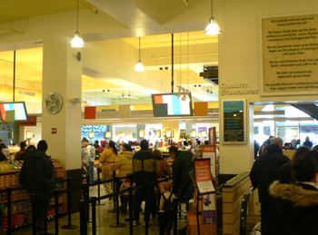

Whole Foods changes register logistics

Whole Foods at Union Square has abandoned its practice of stationing troops at the front of the register lines. We’re all familiar with those famously rude barkers who told you which register to approach with your purchases. In their place, the store has installed two large flatscreen monitors (one in express, one in regular) with four vertical color bands on each, one band for each line. When it’s your turn to go to a register, a number appears in your color band (you can tell by the colored panel hanging above you), and a scary voice booms out “REGISTER THIRTY-TWO!”
This system is superior to the old one, of course. I’m always happy to see humans removed from such menial jobs. But at the moment, everyone in line feels nervous, and it doesn’t help to have the booming alien voice overhead. In the express line, they have a robotish woman, similar to the one you hear on the phone sometimes. In the regular line, you have a loud, seemingly retarded man yelling out the numbers. I felt nervous that I wouldn’t be able to find my register without someone pointing at it for me. The truth, though, is that we were babied by those loud men before. There is still one guy walking around to help out in case of a problem, and some people were getting lost, but we’ve all been through those crazy lines often enough to know how to get around quickly.
One fact that becomes conspicuous is that the express lines are much faster than the regular lines. The robot woman’s voice was twice as regular as that of the scary man. I tend to use the regular line, because it looks shorter and I have a simple brain. The express line is always stretching back to the flowers, or even to the hot food, but it zips right along, and the colored bands on the express flatscreen blink rapidly with the numbers of open registers. Meanwhile, customers in the regular line stand staring at a colorful but otherwise blank screen, eagerly awaiting their turn to take orders from the robot.
Comments
i find the line director people to be insulting to the intelligence of the consumer. they also have them at trader joe’s and sometimes at target in bk. do they really feel that the customer won’t be able to see the huge blinking light and figure out which register to go to- especially after waiting on such a long line? the screens sound pretty efficient though.
i almost blogged about this too bc all these nervous memories from every choreographed dance i’ve ever been in all came rushing back.
or maybe i’m overreacting. but, i was happy to see people relieved from that position. there was a back up human just in case people didn’t get it. “ok you got it! good job!” he would yell out at us, i felt very validated when i got a glowing confirmation that i understood my instruction.
The regular is always strangely slow. They don’t allocate enough registers to make it effective. I totally agree about the superiority of the new systerm. In addition to efficiency, it gives you something to focus your thoughts on while you stand in line. The voices sound almost exactly like the ones on the 6 train. I have expect to be told to take my basket to the next stop, 33rd street.
I was there just one week later, and the video screens were already broken! A sad, truncated, 3-column version was on-screen, and they were reduced to their old human barker technology…
This system has been used for some
time at the Chelsea branch ,althought
it uses fruit and veg. icon’s as
well as color’s.
It’s not a bad system .Of course
God help you if you misread the number’s. Going to the wrong cashier.
Well , it’s not pretty
Add a comment